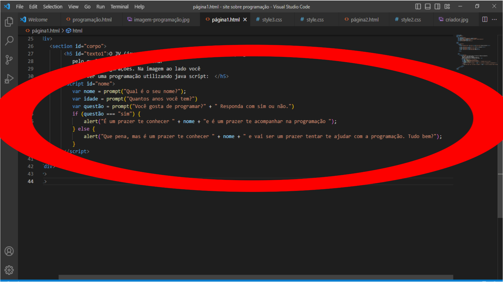
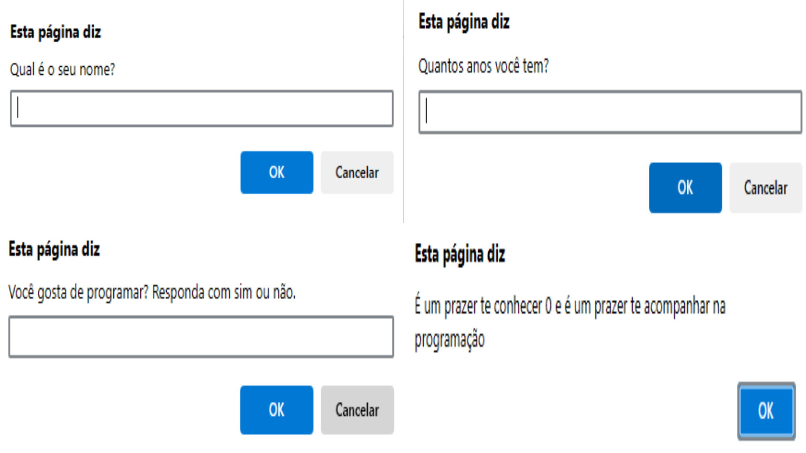

O JV (java script) se trata de um código de programação,
pelo qual é usado para adicionar
algumas interações em nossa página. Na imagem ao lado você
pode ver uma programação utilizando java script:


Sabe aquela mensagem pelo qual solcitou o
seu nome. Aquela é um Java script, é um código
de programação que usei para solicitar o seu nome,
idade. E aquela questão referente a você gostar de
programação ou não, também é java script. Na imagem
ao lado você vai ver as mensagens e acima vocâ vai
ver a programação. Tudo bem?